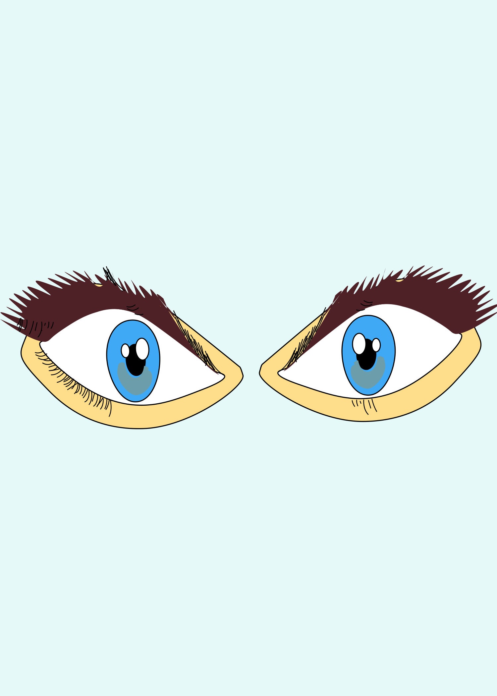

GIF 1 — Animated Eyes
GIF 2 — Bunny Character Animation

For this assignment, I created two GIF animations that challenged me to think about movement, timing, and visual expression in a more intentional way. The first GIF features a pair of stylized eyes that blink and shift slightly, giving a sense of personality and Sassyness. Even though the animation is simple, it taught me how small changes in timing can completely change the emotion the viewer feels. I wanted the eyes to look friendly and expressive specially with the lashes to give it a extra touch, I focused on smooth transitions and clear contrast in the pupils.
The second GIF, which features the soft pink bunny Bailarina animation, It was really fun to work on because I wanted it to feel gentle and whimsical. I animated small movements such as the little bailarina shoes moving and subtle body motion to make the character feel alive without overwhelming the original illustration. Keeping the color palette soft helped the animation stay consistent with the original artwork’s sweet and delicate style.